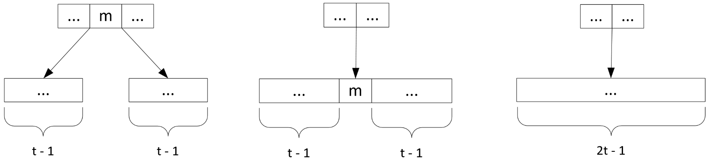
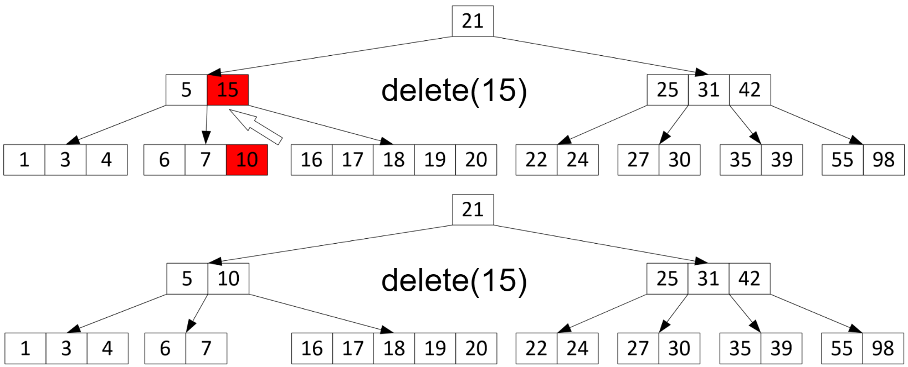
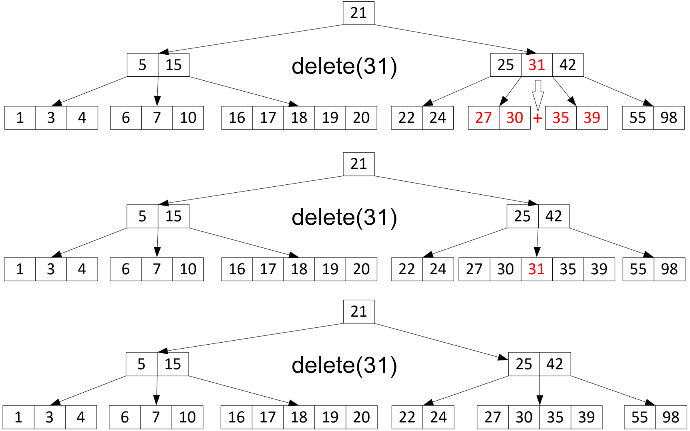

Удаление элемента из $\mathrm{B}$-дерева
- Удаление элемента из $\mathrm{B}$-дерева, очевидно, уменьшает размер узла, из которого оно производится, на $1$
- В таком случае, если размер узла до удаления был равен $t - 1$, нарушится свойство
$\mathrm{B}$-дерева
- А значит, необходимо, чтобы во всех узлах, по которым будет осуществляться проход для поиска удаляемого элемента, было, как минимум, $t$ ключей
Способы поддержания свойства
$\mathrm{B}$-дерева при удалении узла
- Заимствование ключа у соседнего узла
- Слияние узла с соседним
Заимствование ключа
- Чтобы увеличить количество ключей в данном узле, можно забрать один ключ у одного из его «соседей» – узлов, указатели на который в родительском стоят справа и слева от указателя на данный
- Это сработает, если существует хотя бы один сосед, в котором есть хотя бы $t$ узлов
Слияние соседних узлов
Если у узла не нашлось соседей, в которых есть хотя бы $t$ ключей, его можно слить с одним из этих соседей. Операция слияния обратна операции разбиения.

Удаление элемента из $\mathrm{B}$-дерева
- Теперь, когда обеспечено наличие в каждом узле хотя бы $t$ ключей, можно приступать непосредственно к удалению
- Необходимо рассмотреть несколько ситуаций
- Самая простая (и часто встречающаяся) из ситуаций – когда удаляемый элемент находится в листе дерева
- Тогда можно просто удалить ключ из узла, сохранив свойства $\mathrm{B}$-дерева, т.к. до этого мы убедились, что в узле хотя бы $t$ ключей
Удаление элемента из $\mathrm{B}$-дерева
Остальные ситуации описывают случаи, когда удаляемый элемент находится в нелистовом узле. В таком случае:
- Если левый или правый потомок удаляемого ключа имеют хотя бы $t$ ключей, спустимся рекурсивно по поддереву с корнем в этом потомке в поиске максимального (для левого) или минимального (для правого) элемента, поддерживая при этом хотя бы $t$ ключей в каждом узле, как было описано ранее
Удаление элемента из $\mathrm{B}$-дерева
- Найденный элемент переместим на место удаляемого
- На следующем слайде продемонстрирована ситуация, описанная на предыдущем слайде
- Удаляется элемент $15$
Удаление элемента из $\mathrm{B}$-дерева

Удаление элемента из $\mathrm{B}$-дерева
В случае, когда ни один из потомков удаляемого ключа не имеет хотя бы $t$ ключей, необходимо слить его потомков, как это делалось для поддержания $t$ ключей при рекурсивном проходе вниз, и рекурсивно повторить удаление из получившегося узла
Удаление элемента $31$
